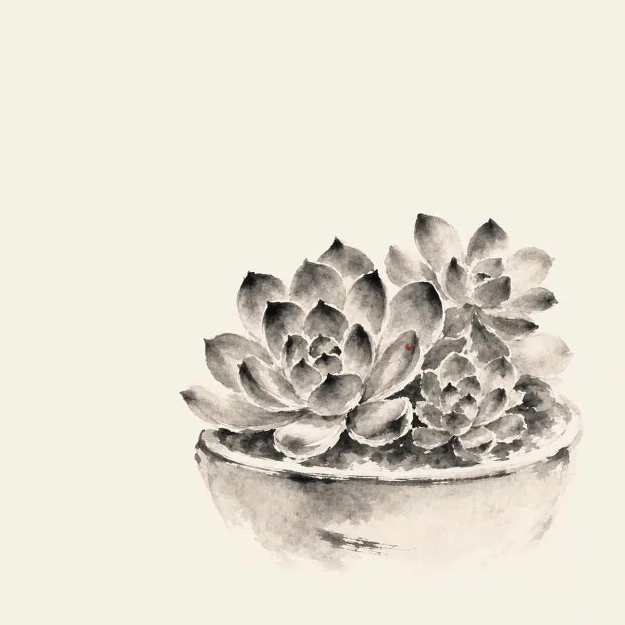

The landing page paints the mountains I walk on weekends.
This page is what grows at home in between — four residents,
painted with the same ink.
RESIDENTS · 四位住户
龟背竹Monstera deliciosathe split-leaf oneThe biggest resident. Each new leaf unrolls from a spike and opens with more splits and windows than the one before it.
春羽Philodendron selloumthe fountainA fountain of deeply lobed leaves on long arching stems. It doesn't climb — it spreads, and keeps negotiating for more floor.
焰Philodendron Ring of Firethe slow oneSerrated, variegated, and famously slow. Weeks of nothing, then one new leaf — and no two leaves ever carry the same pattern.
多肉Succulentsthe quiet benchA small cluster in shallow pots. They hold their own water and their own counsel — the most forgiving thing in the room.

Mountains on weekends, leaves on weekdays.
Both are the same practice: pay attention for long enough,
and slow things turn out to be moving.
嘉颖